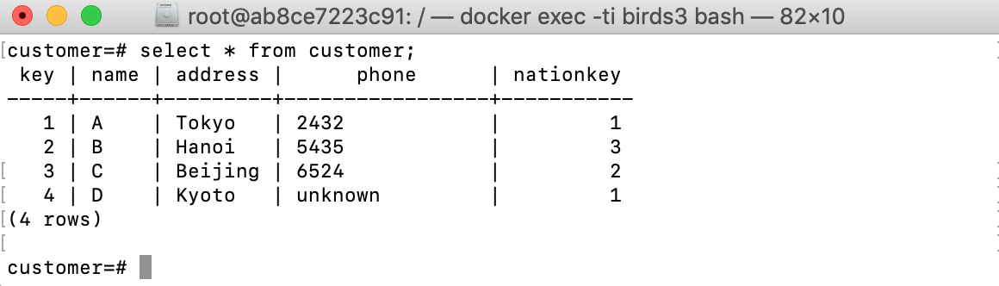

Example: customers database schema
Schema
The customers database (customer.sql) contain two base tables nation(key, name, description) and customer(key, name, address, phone, nationkey) and a view jcustomer(key, name, address)
nation
| key | name | description |
|---|---|---|
| 1 | Japan | none |
| 2 | China | none |
| 3 | Vietnam | none |
customer
| key | name | address | phone | nationkey |
|---|---|---|---|---|
| 1 | A | Tokyo | 2432 | 1 |
| 2 | B | Hanoi | 5435 | 3 |
| 3 | C | Beijing | 6524 | 2 |
jcustomer
| key | name | address |
|---|---|---|
| 1 | A | Tokyo |
Update strategy for jcustomer
If thinking forwardly, the view jcustomer, which contains all customers having Japanese citizenship, can be defined by a query over the two base tables as the
following in Datalog:
jcustomer(K, N, A) :- customer(K, N, A, P, NK), nation(NK, NATION, D),
NATION='Japan'.
Which is a join of tables customer and nation on the attribute
NATIONKEY with a condition that the nationality is Japan. We keep
only three attributes KEY, NAME and ADDRESS from the table
customer in the view.
To illustrate the ambiguity of propagating updates on the view
jcustomer, let’s consider a simple request to delete tuple ⟨1, A, Tokyo⟩ from the view
jcustomer. Obviously, there are three options for propagating this
deletion to the source database. The first option is to delete from the
table customer the tuple ⟨1, A, Tokyo, 1234, 1⟩. The second is to
delete from the table nation the tuple ⟨1, Japan, none⟩. The third
is to perform both deletions in the first and the second options.
Backwardly, we can explicitly specify an update strategy on the view jcustomer as the following (jcustomer.dl):
source nation(KEY:int,NAME:string,DESCRIPTION:string).
source customer(KEY:int,NAME:string,ADDRESS:string,PHONE:string,NATIONKEY:int).
view jcustomer(KEY:int,NAME:string,ADDRESS:string).
% constraint:
⊥ :- not nation(_, 'Japan', _).
-customer(K, N, A, P, NK) :- customer(K, N, A, P, NK), nation(NK, NATION, _), NATION ='Japan', not jcustomer(K, N, A).
tmp(K, N, A) :- customer(K, N, A, _, NK), nation(NK, 'Japan', _).
+customer(K, N, A, P, NK) :- jcustomer(K, N, A), not tmp(K, N, A), nation(NK, 'Japan', _), customer(K, _, _, P, _).
+customer(K, N, A, P, NK) :- jcustomer(K, N, A), not tmp(K, N, A), nation(NK, 'Japan', _), not customer(K, _, _, _, _), P = 'unknown'.
We assume that in the source table nation there exists a tuple having
the attribute NATION equal to ‘Japan’:
∃x, y, nation(x, 'Japan', y). We express this
constraint by a special Datalog rule with a truth constant ⊥ in the head ⊥ :- not nation(_, 'Japan', _).
The meaning of this rule is a first-order logic sentence
(¬∃x, y, nation(x, ‘Japan′, y)) → ⊥,
which is equivalent to ∃x, y, nation(x, ‘Japan′, y).
By this constraint, given an updated view jcustomer, we keep the table
nation unchanged, and update the table customer to reflect the view
updates. First, if there is a Japanese customer, who does not appear in
the view, we choose the option of deleting this customer from the source
table customer
that is more reasonable than deleting the tuple
⟨1, ‘Japan′⟩ from the table nation. Second, if there
is a customer in the view jcustomer but there is no Japanese customer
in the source tables having the same values for KEY, NAME, ADDRESS,
then we insert a new customer to the table customer (lines 7, 8 and 9).
More concretely, to fill the attribute NATIONKEY, we find a key from
the table nation where the nationality is ‘Japan’. Due to the
constraint on nation presented before, we can always find such a key.
To fill in the attribute PHONE, we search for the existing one in the
old table customer. If it is not found, we fill in the attribute
PHONE a default string ‘unknown’.
Verifying and compiling the update strategy into SQL:
birds -v -f jcustomer.dl -o jcustomer.sql

The defining query of the view is also automatically derived by the above command.
Running in PostgreSQL
Let’s go to the PostgreSQL database using psql -U postgres and try an INSERT statement on the view jcustomer:
insert into jcustomer values (4,'D','Kyoto');

And check the base table customer after the update:

A new tuple ⟨4, D, Kyoto, unknown, 1⟩ was inserted into customer.
Let’s delete one tuple from jcustomer:
delete from jcustomer where key=1;
And the result:

If we insert into jcustomer a new tuple having the same key 4, then there is a key conflict, the insertion will be rejected:

Obviously, the strategy is based on the constraint that there exists a tuple (_, 'Japan', _) in the table nation. The generated SQL code also checks the existence of such a tuple before doing any view update. Thereby, if we delete the tuple (1,'Japan','none') from nation:
delete from nation where name='Japan';
That the new table nation does not have the nation Japan anymore,

Updates to the view jcustomer will be rejected with the error messange ‘Invalid view update: constraints on the source relations are violated’: